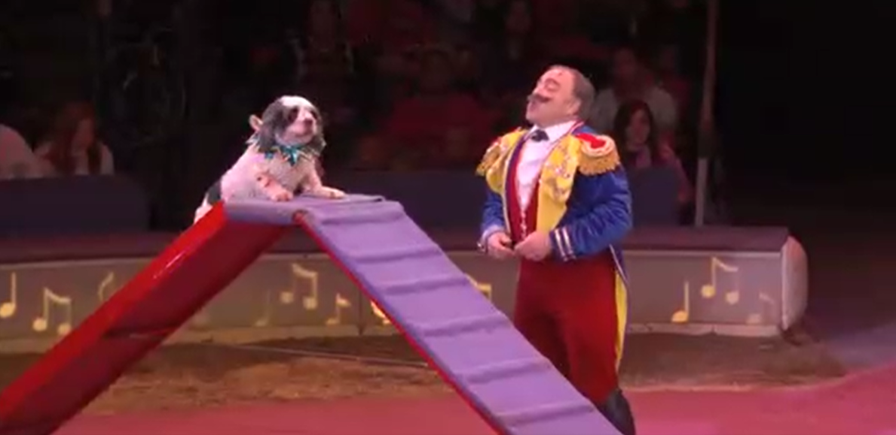

Description: This fun video from PBS introduces Newton's Laws for a younger audience using circus animals and tricks.

Quote: The dog show looks like chaos in the ring, but the commotion can be explained by just three simple laws of motion. Objects in motion tend to stay in motion. Force equals mass times acceleration. And for every action, there is an equal and opposite reaction. Learn how these three laws--Newton's Laws of Motion--can help make sense out of the outrageous antics of the dog show.